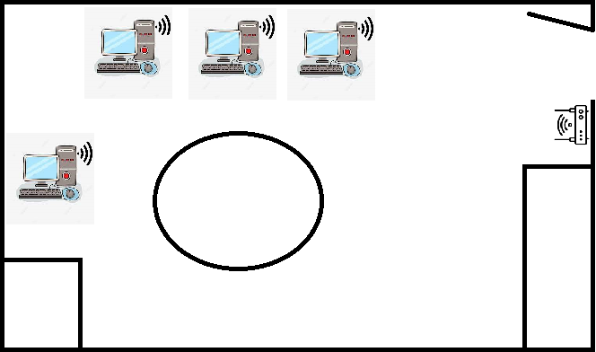
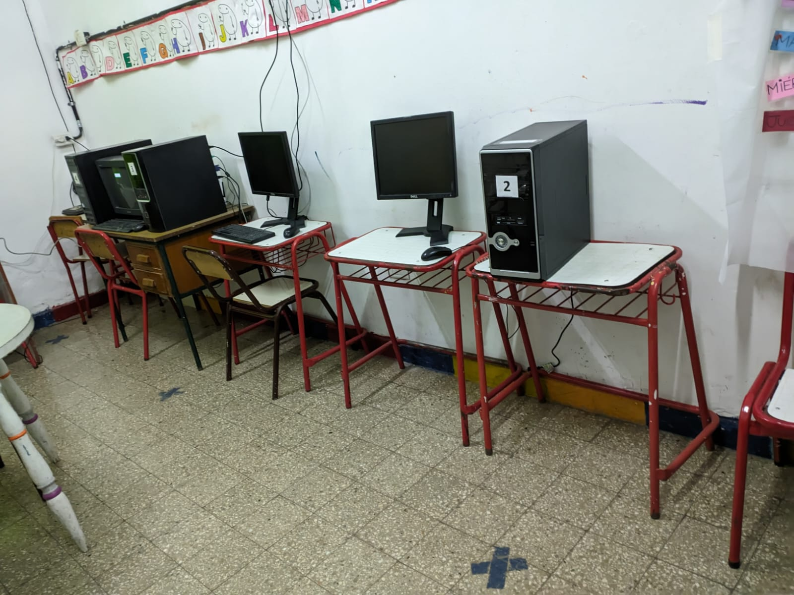
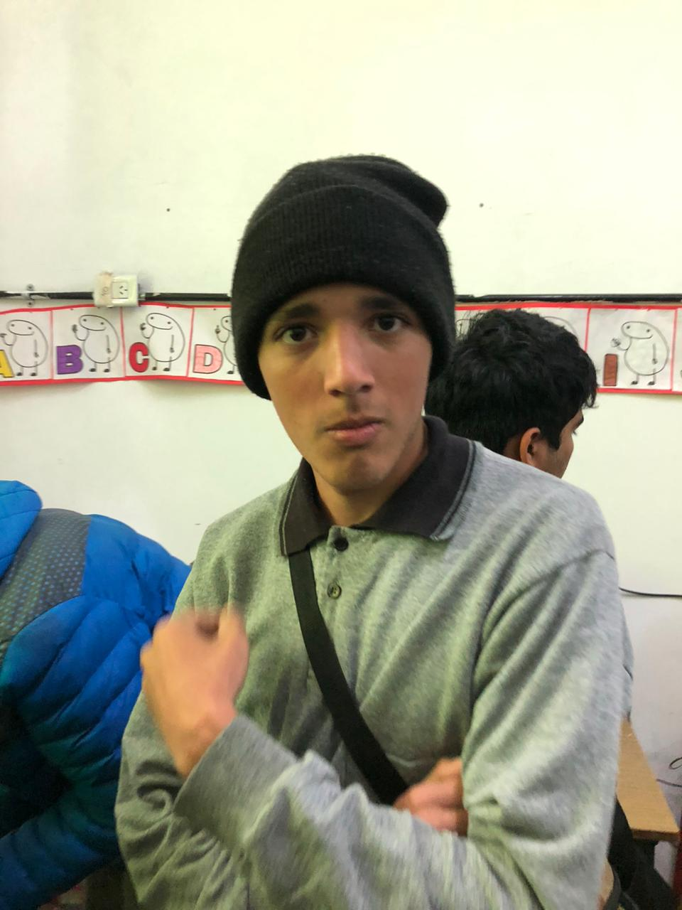
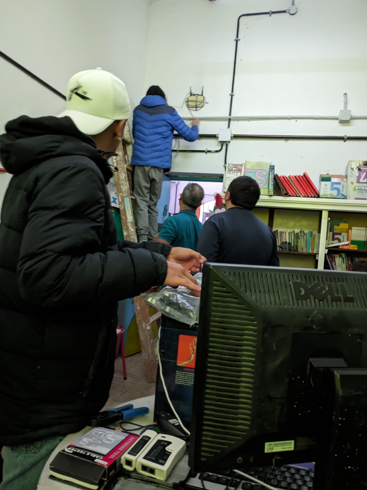

Desarrollo:
El proyecto se basa en brindarles a la "Esc. Especial 2004 Ruben Naranjo" servicio tecnico, brindandoles computadoras y conectar las mismas a internet

Imagenes Ilustrativas del trabajo:



Materiales Utilizados:
| 4 Computadoras de oficina con windows 10 |
| 4 Monitores Genericos |
| 4 Teclados |
| 4 Mouses |
| 4 Placas de Red |
Procedimiento
Destapamos las maquinas para instalarles sus placas de red para que asi sea posible la conexión wireless despues verificamos el funcionamineto de las mismas, configuramos sus direcciones Ipv4 y no fuimos...